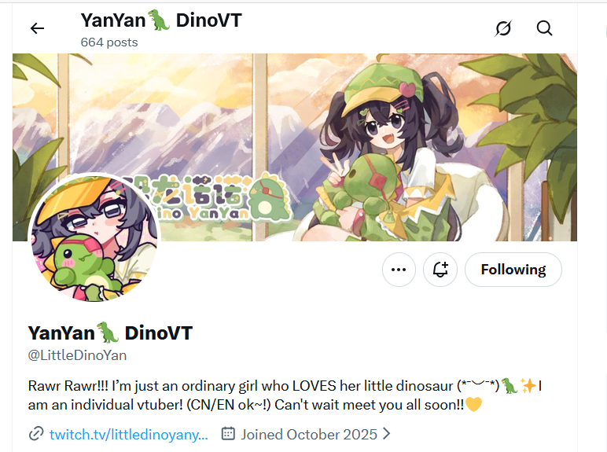

RAWR!!!!!!!! 🦖✨
Little Dino YanYan
I’m just an ordinary girl who LOVES her little dinosaur (*ˉ︶ˉ*)！歡迎來到恐龍博物館網站!!在這裡收藏了直播、歌回和活動的展覽品!!。

個人勢 VTuber，可以中文／英文交流，日文還在努力學習中。比起一本正經的自我介紹，這裡更多保留諾諾真實、可愛、偶爾犯懶，也一直努力往前走的樣子。
I’m just an ordinary girl who LOVES her little dinosaur (*ˉ︶ˉ*)！歡迎來到恐龍博物館網站!!在這裡收藏了直播、歌回和活動的展覽品!!。
不用想要看什麼，讓小恐龍從收藏裡抽出一段歌聲、一場活動，或一個曾經笑過的瞬間。
按下按鈕，看看今天是哪段回憶來找你。
不是用數字衡量成長，而是把那些「從這一天開始不一樣了」的時刻，慢慢連成一條路。
有些回憶不是一段影片，而是一句多年後想起來，還是會笑出來的話。
